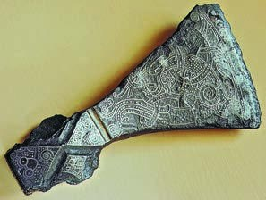
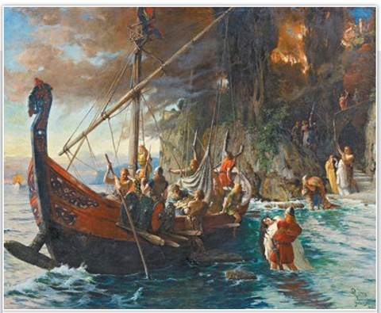
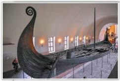
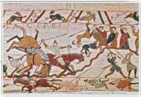
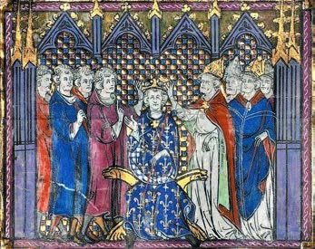
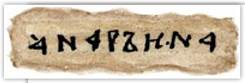
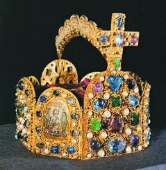
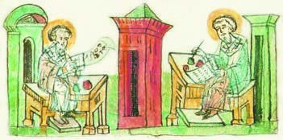
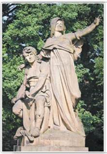

Европа в IX–XI веках
Амина, это история о том, как на Европу со всех сторон нападали чужаки, а каждая страна отбивалась по-своему.
Представь большой дом, который построил Карл Великий. В § 3 его поделили три внука, и каждая часть зажила сама по себе. И тут в окна полезли непрошеные гости: с севера на кораблях приплыли норманны, с востока прискакали кочевники-венгры, с юга нападали арабы.
Каждый «жилец» ответил по-своему. Англия собралась в один кулак вокруг одного короля. Франция рассыпалась на куски: каждый знатный сосед защищал только свой двор. А Германия разбила венгров и сама стала новой империей.
И самое неожиданное: сами разбойники тоже изменились. Норманны и венгры осели на земле, крестились и создали свои государства. А рядом появились первые государства славян.
Главный вопрос параграфа: как нападения норманнов и венгров повлияли на разные страны Европы и что они дали самим норманнам и венграм? Запомни четыре имени из начала параграфа:
У каждого шага написано, какой это пункт параграфа. Внизу шага есть «Подробнее, как в учебнике»: там всё, что есть в этом пункте, ничего не пропущено. Сначала учи по коротким шагам, а перед уроком открой «подробнее».
Плашка вверху шага подскажет, откуда он: синяя 📖 — из учебника, золотая ✎ — задание учебника, терракотовая 🎲 — придумали мы для тренировки. В «Содержании» шаги так же разбиты на группы.
Подробнее, как в учебнике · с. 39
- Главный вопрос параграфа: как нападения норманнов и венгров в IX–XI вв. повлияли на развитие разных стран Европы? Какие последствия они имели для самих норманнов и венгров?
- Иллюстрация в начале параграфа: «Набег викингов». Фрагмент. Художник Ф. Лике, 1906 год (картина — на шаге 4).
- Рядом с картиной — слова А. Дурново: «На рубеже первого и второго тысячелетий нашей эры все воевали со всеми. А скандинавов ещё и сама природа подталкивала к тому, чтобы брать в руки оружие. Край они населяли суровый и холодный. Отлично знали, что такое зима и как несладко приходится человеку в эту непростую пору. Каменистая и мёрзлая земля не была столь плодородна, как у южных соседей. Здесь не рос виноград, да и с пшеницей возникали сложности. Викинги достаточно быстро поняли, что проще брать нужные им ресурсы силой, нежели производить их. К тому же Европа оказалась уж очень податлива...»
- Слова параграфа: кириллица, норманны, путь «из варяг в греки», раздробленность. Люди: Альфред Великий, Вильгельм Завоеватель, Кирилл и Мефодий, Оттон I. Всё это есть в словарике и в игре «Кто что сделал».
- Таблица дат параграфа разобрана на следующем шаге.
Лента времени
Это все даты из таблицы в начале параграфа, сверху вниз от ранних к поздним. Нажми на дату, чтобы прочитать, что случилось. Красные помечены «Россия», как в учебнике.
965 год — снова хазары. В § 3 ты читала, что ранняя столица Хазарского каганата, Семендер, стояла на землях нынешнего Дагестана, у Каспия. Арабский географ того времени писал, что русы разорили хазарские города, и Семендер тоже.
Ещё даты, которые встречаются в тексте параграфа
- 863 г. — Кирилл и Мефодий прибыли в Великую Моравию (п. 5).
- Конец VIII — середина XI в. — набеги норманнов (п. 1).
- Середина IX в. — могильный холм с кораблём в Осеберге (п. 1).
- Конец IX в. — норманны открыли Исландию (п. 1).
- X в. — возникло герцогство Нормандия; норманны открыли Гренландию (п. 1).
- Около 1000 г. — Лейф Счастливый доплыл до Северной Америки, Винланд (п. 1).
- XI в. — нормандцы захватили Сицилию и Южную Италию (п. 1).
- V–VI вв. — англы и саксы основали королевства в Англии (п. 2).
- 871–900 гг. — Альфред Великий (п. 2).
- 1066 г. — разгром Харальда Сурового, через три дня битва при Гастингсе (п. 2).
- 1066–1087 гг. — Вильгельм I Завоеватель (п. 2).
- Конец XI в. — государства в Скандинавии, конец «эпохи викингов» (п. 2).
- IX–X вв. — раздробленность в Западно-Франкском королевстве, его стали называть Францией (п. 3).
- Конец X в. — королём Франции стал Гуго Капет; Капетинги правили до XIV в. (п. 3).
- Вторая половина XI в. — все короли Франции потомки Ярослава Мудрого (п. 3).
- Конец IX в. — венгры поселились на среднем Дунае (п. 4).
- Начало X в. — в Восточно-Франкском королевстве пресеклись Каролинги, появилось Германское королевство (п. 4).
- 936–973 гг. — Оттон I (п. 4).
- Конец X в. — Венгерское королевство (п. 4).
- Начало IX в. — Великая Моравия (п. 5).
- VIII в. — Пржемысл, основатель чешской династии, по легенде (п. 5).
- Конец IX в. — крестился чешский князь; начало X в. — Великая Моравия погибла от венгров (п. 5).
- X в. — Чехия вошла в Священную Римскую империю; XI–XII вв. — чешские князья стали королями (п. 5).
- X в. — Польское государство; 966 г. — поляки приняли христианство; 1025 г. — Болеслав I Храбрый получил королевский титул (п. 5).
Эти даты потом пригодятся в игре «Расставь по порядку».
Кто такие норманны
В IX веке во всех храмах Европы священники молились: «Господи, защити нас от ярости норманнов!» Кого так боялись?
Норманны — это «северные люди». Так в Западной Европе звали жителей Скандинавии, предков датчан, шведов, норвежцев и исландцев.
Почему они пустились за море? В Скандинавии суровый климат и мало земли, которую можно пахать. Зато есть море, а по морю можно доплыть в любую страну.
Историк А. Дурново (его слова стоят в учебнике рядом с картиной на с. 39) объясняет так: в те века все воевали со всеми, а скандинавов ещё и сама природа толкала к оружию. Зима суровая, земля каменистая и мёрзлая, виноград не растёт, даже с пшеницей трудно. Викинги быстро поняли, что проще забрать нужное силой, чем вырастить самим. А Европа оказалась слишком лёгкой добычей.
А ещё в VIII–X веках у них случилось то же, что у германцев в Великое переселение народов из § 1. Вожди усилились, вокруг них собрались дружины, которые хотели славы и добычи. Итог — нападения, завоевания и переселение на новые земли.
Одних и тех же людей называли по-разному:

Подсказка к вопросу про топор
Рассмотри топор внимательно: весь металл покрыт узорами. Рядом в учебнике написано, что оружие стоило очень дорого, его ценили и украшали, а воины верили в его волшебную силу. Стал бы лесоруб так украшать рабочий инструмент?
Подробнее, как в учебнике · с. 40, п. 1
- Иллюстрация: топор эпохи викингов, современная фотография. Подпись: оружие в то время стоило очень дорого, высоко ценилось и часто украшалось орнаментами и другими изображениями. Нередко воины считали, что оно обладает магической силой. Вопрос: по каким признакам можно определить, что перед нами наконечник боевого топора, а не орудие лесоруба?
- Пункт 1 «Походы викингов». В IX веке во всех храмах Европы священники возносили молитвы: «Господи, защити нас от ярости норманнов!» Норманнами, то есть «северными людьми», в Западной Европе называли жителей Скандинавии, предков современных датчан, шведов, норвежцев и исландцев.
- Скандинавия отличается суровым климатом. Земель, удобных для обработки, здесь мало, поэтому огромную роль в жизни скандинавов играло море, по которому можно было попасть в другие страны.
- То, что происходило в Скандинавии в VIII–X веках, напоминало перемены в жизни германцев в эпоху Великого переселения народов: усиление влияния вождей, образование дружин, стремившихся к славе и добыче. И как следствие — нападения, завоевания и переселение на новые земли. Участников морских походов сами скандинавы называли викингами. На Руси их называли варягами.
Быстрые корабли и внезапные набеги
С конца VIII до середины XI века набеги норманнов шли один за другим. На быстрых кораблях приплывали хорошо вооружённые и опытные воины.
Они опустошали берега, а по рекам заплывали далеко вглубь материка. Разорили Лондон, Париж и даже Ахен, столицу Карла Великого из § 3.
Нападали так внезапно, что отряды местных правителей не успевали прийти на помощь мирным жителям. Как молния: пока соберёшь войско, викингов уже и след простыл.


В 1904 году у селения Осеберг в Южной Норвегии раскопали могильный холм середины IX века. Внутри был корабль с мачтой и вёслами, повозка, сани, деревянные кровати и другие вещи для дома. Там же похоронили двух женщин, нескольких собак и лошадей.
Подсказка: каким норвежцы представляли загробный мир?
Это вопрос учебника. Подумай: зачем умершим корабль, сани, повозка, кровати и лошади? Если люди клали всё это в могилу, какой они представляли жизнь после смерти?
Подробнее, как в учебнике · с. 40–41, п. 1
- С конца VIII до середины XI века нападения норманнов следовали одно за другим. На своих быстроходных кораблях хорошо вооружённые и опытные воины опустошали побережье, по рекам проникали далеко вглубь континента, разоряя Лондон, Париж, Ахен. Набеги викингов были столь внезапны, что отряды местных правителей не успевали приходить на помощь мирным жителям.
- Иллюстрация и врезка «Корабль из Осеберга»: археологи, начавшие раскопки в 1904 году у селения Осеберг в Южной Норвегии, обнаружили могильный холм середины IX века. Внутри него находился корабль с мачтой и вёслами, повозка, сани, деревянные кровати и другие предметы домашнего обихода. Длина корабля составляла 21,6 метра. Также в кургане были похоронены две женщины, несколько собак и лошадей.
- Задание учебника: на основе информации об Осебергском погребении определите, каким представляли себе жители Норвегии IX века загробный мир.
Нормандия и путь «из варяг в греки»
Со временем норманны стали не только грабить, но и захватывать прибрежные земли других стран и основывать там свои государства.
В X веке французский король был вынужден отдать норманнам большие земли на севере страны. Так появилось герцогство Нормандия. Поселившиеся там скандинавы крестились, заговорили на местном языке и переняли местные обычаи. А в XI веке выходцы из Нормандии захватили Сицилию и Южную Италию.
Норманны — «северные люди», скандинавы. Нормандцы — выходцы из Нормандии, их потомки, которые уже крестились и живут по-местному. Запомни по названию: нормандцы из Нормандии, как москвичи из Москвы.
Там, где лёгкой победы не ждали, норманны осторожничали. Откладывали мечи, выдавали себя за купцов, а бывало, и правда торговали.
Через земли Руси по рекам шёл торговый путь «из варяг в греки». Варяги — это скандинавы, греки — жители Византии из § 2. По этому пути викинги попадали в Византию и часто нанимались туда на военную службу.
Подробнее, как в учебнике · с. 41, п. 1
- Со временем норманны стали захватывать прибрежные области других стран и основывать там свои государства. В X веке французский король вынужден был уступить норманнам обширные земли на севере страны. Так возникло герцогство Нормандия. Поселившиеся там скандинавы приняли христианство, переняли местный язык и обычаи. Позже, в XI веке, выходцы из Нормандии — нормандцы — захватили Сицилию и Южную Италию.
- Там же, где норманны не рассчитывали на лёгкую победу, они проявляли осторожность и, отложив мечи в сторону, выдавали себя за купцов, а при случае и в самом деле занимались торговлей. По торговому пути «из варяг в греки», пролегавшему по рекам через земли Руси, викинги попадали в Византию, где нередко нанимались на военную службу.
Исландия, Гренландия, Винланд
Норманны были лучшими мореходами своего времени. Их быстрые корабли легко проходили по узким рекам и выдерживали океанские штормы.
В конце IX века норманны открыли остров и назвали его Страной льда, Исландией. И начали его заселять.
Чтобы заманить поселенцев в суровые края, норманны называли новые земли по самому лучшему, что там видели. Землю к северо-западу от Исландии, открытую в X веке, назвали Зелёной страной, Гренландией, хотя зелени там мало.
Около 1000 года исландец Лейф Счастливый доплыл до Северной Америки. В лесах он нашёл дикий виноград и назвал это место Винланд, Страна винограда. Норманны побывали в Америке первыми из европейцев, за 500 лет до Колумба!
Археологи уже в наше время раскопали их поселение на острове Ньюфаундленд. Но надолго норманны там не остались. Рассказы о Винланде передавали из поколения в поколение, но за пределами Скандинавии о нём никто не узнал.
Норманны были язычниками, но с богатой и своеобразной культурой. Писали особыми знаками, рунами. Их сказания, саги, рассказывали о жестоких битвах и дальних плаваниях, например в Гренландию и Винланд.
Подсказка к заданию с картой 6
В учебнике просят по карте 6 назвать острова на пути в Винланд. Открой карту в конце учебника и проследи путь от Норвегии на запад. Три острова из этого пути уже встречались на этом шаге.
Подробнее, как в учебнике · с. 41, п. 1
- Норманны были лучшими мореходами своего времени. Их быстроходные корабли не только легко передвигались по узким рекам, но и выдерживали океанские штормы. В конце IX века норманны открыли остров, названный ими Страной льда — Исландией, и начали его заселять.
- Любопытные детали: чтобы привлечь в суровые места поселенцев, норманны старались называть открытые земли по лучшему, что они там увидели. Обнаружив в X веке землю к северо-западу от Исландии, они окрестили её Зелёной страной — Гренландией, хотя зелени там было мало. А когда около 1000 года выходец из Исландии Лейф Счастливый достиг Северной Америки, то, обнаружив там в лесах дикий виноград, назвал это место Винланд — Страна винограда. Норманны побывали в Новом Свете первыми из европейцев — за 500 лет до Колумба. Уже в наше время археологи раскопали их поселение на острове Ньюфаундленд. Правда, надолго закрепиться в Америке норманнам не удалось. Рассказы о Винланде передавались из поколения в поколение, но за пределами Скандинавии о нём никто не узнал.
- Задание учебника: с помощью карты 6 (см. Приложение) назовите острова, которые встречались норманнам по пути следования в Винланд.
- Норманны были варварами-язычниками с богатой и самобытной культурой. Они пользовались особой письменностью — рунами. Скандинавские сказания — саги — повествовали о жестоких сражениях и о дальних путешествиях, таких как плавания в Гренландию и Винланд.
- Вопросы учебника после пункта 1: на какие страны нападали норманны? Какие новые земли они открыли? В чём разница между норманнами и нормандцами? Предположите, как торговый путь «из варяг в греки» повлиял на развитие русских городов, через которые он проходил.
Альфред Великий собирает Англию
Когда в конце VIII века у берегов Англии появились корабли викингов, там было несколько королевств. Их основали ещё в V–VI веках германские племена англов и саксов, поэтому жителей называют англосаксами. Их правители уже были христианами.
В IX веке нападения викингов (в Англии их звали датчанами) становились всё опаснее. Скоро под их властью оказалась большая часть страны. Казалось, их не остановить.
Но король англосаксов Альфред Великий (871–900) сумел дать отпор. Он укрепил границу новыми крепостями, построил флот и переделал армию.
Каждый шестой
Раньше основой армии было народное ополчение. Альфред сделал так: служит только каждый шестой, кто годен к службе, а остальные пятеро его содержат. На эти средства воин покупает оружие, всё время учится военному делу и может биться с викингами на равных.
Сравни с Карлом Мартеллом из § 3. Он тоже понял, что ополчение не справляется, но содержал воинов за счёт земли с крестьянами. Мысль одна: нужен воин, которого кормят другие, чтобы он занимался только войной.
С новым войском Альфред переломил войну с датчанами. Он объединил англосаксонские королевства и стал первым королём Англии. А его преемники полностью выгнали датчан из страны.
Подробнее, как в учебнике · с. 42, п. 2
- Пункт 2 «Норманны и Англия». Когда в конце VIII века у берегов Англии появились корабли викингов, там существовали королевства, основанные ещё в V–VI веках германскими племенами англов и саксов. Их правители приняли христианство. В IX веке нападения викингов (в Англии их называли датчанами) становились всё опаснее. Вскоре под их властью оказалась большая часть страны. Казалось, остановить их невозможно.
- Но король англосаксов Альфред Великий (871–900) сумел организовать сопротивление норманнам. Он укрепил границу новыми крепостями, создал флот и реформировал армию, основу которой прежде составляло народное ополчение. В новом войске стал служить лишь каждый шестой годный к службе. Остальные пять его содержали, чтобы он мог приобрести оружие, усердно заниматься военным делом и сражаться с завоевателями на равных.
- Опираясь на новое войско, Альфред добился перелома в борьбе с датчанами. На фоне этих успехов ему удалось объединить англосаксонские королевства и стать первым королём Англии. Его преемники полностью вытеснили датчан из страны.
1066 год: Харальд против Гарольда
Последний раз норманны напали на Англию в 1066 году. Норвежский король Харальд III Суровый заявил, что трон Англии должен быть его, и высадился с войском в Британии.
Но ополчение англосаксов во главе с их королём Гарольдом разгромило норманнов. Сам Харальд погиб в бою.
Имена похожи, а люди разные. Харальд — норвежец, он нападал. Гарольд — англосакс, король Англии, он защищался.
Харальд и Ярослав Мудрый: история со свадьбой
В молодости Харальд служил на Руси, при дворе князя Ярослава Мудрого. Он посватался к дочери Ярослава, Елизавете, но получил отказ: жених был слишком беден.
Тогда Харальд с отрядом поступил на службу к византийскому императору, прославился и разбогател. Вернулся на Русь и наконец женился на Елизавете. Что стало с ней после гибели Харальда, неизвестно. А их дочь потом стала королевой Дании.
Подробнее, как в учебнике · с. 42, п. 2
- В последний раз норманны напали на Англию в 1066 году, когда норвежский король Харальд III Суровый заявил о своих претензиях на английский трон и высадился с войском в Британии. Однако ополчение во главе с королём англосаксов Гарольдом сумело разгромить норманнов, король которых пал в бою.
- Любопытные детали: претендент на английский трон — норвежский король Харальд III Суровый — в молодости служил при дворе древнерусского князя Ярослава Мудрого. Харальд сватался за дочь Ярослава, Елизавету, но получил отказ из-за своей бедности. Чтобы заработать деньги, Харальд со своим отрядом поступил на службу к византийскому императору. Прославившись и разбогатев, норвежец вернулся на Русь и наконец женился на Елизавете. После гибели Харальда о судьбе его жены ничего неизвестно. Но дочь Елизаветы и Харальда впоследствии стала королевой Дании.
Гастингс: Вильгельм Завоеватель
Англосаксы праздновали победу. Но через три дня на юге Англии высадился новый претендент на трон — нормандский герцог Вильгельм.
В жестокой битве при Гастингсе тяжеловооружённая конница Вильгельма победила пехоту Гарольда. Последний англосаксонский король бился до конца и погиб. Его дочь Гита убежала из Англии и позже стала женой русского князя Владимира Мономаха.
Вильгельм вошёл в Лондон, и там его короновали как Вильгельма I (1066–1087). В историю он вошёл как Вильгельм Завоеватель. Лучшие земли он раздал своим дружинникам и приближённым, но потребовал, чтобы все поклялись ему в верности.

Подсказка: где нормандцы, а где англосаксы?
Это задание учебника. Вспомни, у кого в этой битве была конница, а у кого пехота. Потом найди на вышивке всадников и пеших воинов и опиши, чем они вооружены: копья, щиты, мечи, топоры, шлемы.
События 1066 года считают концом «эпохи викингов». К концу XI века в самой Скандинавии появились государства, и их жители крестились. Викинги, осевшие в других странах, тоже создали свои королевства. Набеги и дальние плавания остались в прошлом.
Подробнее, как в учебнике · с. 42–43, п. 2
- Англосаксы торжествовали победу, но спустя три дня на юге Англии высадился новый претендент на престол — нормандский герцог Вильгельм. На этот раз удача отвернулась от англосаксов. В ожесточённой битве при Гастингсе тяжеловооружённая конница Вильгельма взяла верх над пехотой Гарольда. Последний англосаксонский король сражался до конца и погиб в бою. Дочь Гарольда, Гита, после смерти отца бежала из Англии и позже стала женой русского князя Владимира Мономаха.
- Нормандский герцог вступил в Лондон, где и был коронован как Вильгельм I (1066–1087). Новый правитель, оставшийся в истории как Вильгельм Завоеватель, раздал лучшие земли своим дружинникам и приближённым, но потребовал принесения ему клятвы верности.
- Иллюстрация: битва при Гастингсе. Ковёр из Байё, XI век, фрагмент. Задание: определите, где на иллюстрации нормандцы, а где англосаксы. Опишите вооружение воинов обеих армий.
- События 1066 года считаются завершением «эпохи викингов». К концу XI века в Скандинавии образовались государства, население которых приняло христианство. Викинги, осевшие в других странах, также создали свои королевства. Набеги и дальние плавания остались в прошлом.
- Вопросы учебника после пункта 2: что важного произошло в Англии при Альфреде Великом? Чем для Англии завершилась «эпоха викингов»?
Почему Франция рассыпалась
Представь класс, где учитель разрешил старостам рядов самим ставить оценки и собирать деньги. Скоро старосты решают всё сами, а учителя почти не слушают. Примерно так вышло во Франции.
Викингам так везло во многом потому, что их противники были слабыми, особенно Франция. На то было три причины:
- земли, которые короли когда-то раздали, постепенно превращались в феоды (помнишь из § 3: земля за службу, которую передают по наследству). Их владельцы всё меньше зависели от короля и старались служить ему поменьше;
- короли сами, чтобы привлечь знать на свою сторону, давали ей новые права: судить и собирать налоги;
- когда нападали враги, люди могли надеяться только на местную знать, а не на далёкого короля. От этого знать становилась ещё сильнее.
Наступил период раздробленности: страна распалась на много владений, и каждое жило само по себе. Как пазл, который рассыпался: картинка вроде бы одна, а кусочки лежат отдельно.
Быстрее всего в IX–X веках это шло в Западно-Франкском королевстве, одной из трёх частей Верденского раздела. Как раз тогда его стали называть Францией. Сравни: Англию викинги заставили объединиться, а Францию — наоборот.
Подробнее, как в учебнике · с. 43, п. 3
- Пункт 3 «Раздробленность во Франции». Успехи викингов во многом объясняются военной слабостью их противников, особенно во Франции. На то имелись свои причины.
- Земли, когда-то пожалованные королями, постепенно превращались в феоды. Их владельцы всё меньше зависели от короля и стремились сократить службу в его пользу. Да и сами правители, желая привлечь знать на свою сторону, жаловали ей новые привилегии: вершить суд, собирать налоги. Могущество местной знати росло ещё и потому, что только на неё местное население могло рассчитывать при нападении врагов. Наступил период раздробленности. В IX–X веках быстрее всего это происходило в Западно-Франкском королевстве, которое как раз в то время стало называться Францией.
Гуго Капет и Анна Ярославна
Последние Каролинги во Франции почти не имели власти. В конце X века знать отдала корону могущественному графу Парижскому Гуго Капету, который успешно воевал с норманнами. Его потомков называют Капетингами, они правили Францией до XIV века. А потом, до середины XIX века, на троне (с небольшими перерывами) сидели их родственники из младших ветвей той же династии.
А теперь связь с Русью. Внук Гуго Капета женился на Анне, дочери князя Ярослава Мудрого. Поэтому со второй половины XI века все короли Франции — потомки Ярослава Мудрого!
Когда муж умер, Анна участвовала в управлении королевством. Это видно по документам с её подписью, и одна подпись сделана кириллицей.


Что написала Анна и при чём тут Данте
На подписи написано «АНА РЪИНА». Это латинские слова «Anna regina», «Анна королева», только русскими буквами.
Через триста лет, в XIV веке, итальянский поэт Данте написал поэму «Божественная комедия». В ней Гуго Капет встречается в Чистилище (у католиков это место между раем и адом) и говорит о себе: «Я был Гугон, Капетом наречённый, И не один Филипп и Людовик Над Францией владычил, мной рождённый...» То есть многие короли Франции по имени Филипп и Людовик — его потомки.
Подсказка: почему король Франции женился на русской княжне?
Это вопрос учебника. Подумай, какой была Русь при Ярославе Мудром: сильной или слабой, бедной или богатой? И вспомни Харальда из шага 8: многие хотели породниться с Ярославом.
Подробнее, как в учебнике · с. 43–44, п. 3
- Иллюстрация на с. 43: коронация Гуго Капета. Миниатюра, XIV век. Подпись: в XIV веке итальянский поэт Данте Алигьери, описывая Чистилище (в католицизме — промежуточное место между раем и адом) в своей поэме «Божественная комедия», использует образ Гуго Капета. В поэме основатель французского королевского дома, обращаясь к потомкам с обличительной речью, говорит о себе так: «Я был Гугон, Капетом наречённый, И не один Филипп и Людовик Над Францией владычил, мной рождённый...»
- Иллюстрация на с. 44: подпись королевы Анны Ярославны. Подпись к ней: любопытно, что со второй половины XI века все короли Франции являлись потомками русского князя Ярослава Мудрого, поскольку внук Гуго Капета женился на дочери Ярослава Анне. После смерти мужа Анна участвовала в управлении королевством, что удостоверяется рядом документов с её подписью, в том числе на кириллице. Вопрос: как вы думаете, почему французский король взял в жёны дочь русского князя?
- Последние Каролинги не обладали во Франции большой властью, и в конце X века знать передала корону могущественному графу Парижскому Гуго Капету, который успешно боролся с норманнами. Его потомки — Капетинги — правили Францией до XIV века, а затем до середины XIX века французский трон (с небольшими перерывами) занимали представители младших ветвей этой династии.
Король — «первый среди равных»
Что мог король Франции? Вести французское войско в больших войнах с соседями и мирить тех, кто спорит. И почти всё.
Его собственные земли — узкая полоса от реки Сены до реки Луары с городами Париж и Орлеан. Они достались ему как наследнику графов Парижских. Но и там он не был полным хозяином: местная знать не хотела ему подчиняться.
Франция делилась на множество крупных и мелких владений. У некоторых герцогов и графов, например у герцогов Нормандии и графов Шампани, было больше земель и богатства, чем у самого короля. Они сами собирали налоги, чеканили монету и вели войны.
Короля они считали не повелителем, а лишь «первым среди равных». Как старший в компании друзей: его зовут первым, но приказывать он не может.
Подробнее, как в учебнике · с. 44, п. 3
- Король возглавлял французское войско в больших войнах с соседями, выступал посредником в спорах. В остальном его власть ограничивалась узкой полосой земель от Сены до Луары с городами Париж и Орлеан, принадлежавшими ему как наследнику графов Парижских. Но и там он не был полным хозяином: местная знать не желала ему подчиняться.
- Франция делилась тогда на множество крупных и мелких владений. Некоторые представители высшей знати — герцоги Нормандии, графы Шампани и другие — имели больше земель и богатств, чем сам король. Они фактически не зависели от монарха, считая его не верховным властителем, но лишь «первым среди равных». Они самостоятельно собирали налоги, чеканили монету, вели войны.
- Вопрос учебника после пункта 3: почему во Франции наступил период раздробленности?
Германия против венгров
Теперь другая часть Верденского раздела, Восточно-Франкское королевство. В начале X века династия Каролингов там прервалась. Власть короля ослабла и здесь, но меньше, чем во Франции. Знать выбрала королём одного из герцогов. Так появилось Германское королевство.
Германию били с двух сторон. С севера нападали норманны, а с юга — кочевники-венгры. С конца IX века они жили по среднему течению Дуная, там, где раньше жили авары, которых разгромил Карл Великий.
Против венгров по указу короля вдоль границы строили крепости и создали сильное конное войско. Король Оттон I (936–973) нанёс венграм решающее поражение.
После этого венгры перестали ходить в набеги и понемногу перешли к оседлой жизни. Позже они крестились, и в конце X века возникло Венгерское королевство. Вот и ответ на вторую часть главного вопроса: разбойники сами стали королевством.
Подробнее, как в учебнике · с. 44–45, п. 4
- Пункт 4 «Создание Священной Римской империи». В Восточно-Франкском королевстве династия Каролингов пресеклась в начале X века. К тому времени королевская власть здесь тоже ослабла, хотя и меньше, чем во Франции. Знать избрала королём одного из герцогов. Так появилось Германское королевство.
- Германия подвергалась ударам с двух сторон. С севера на неё совершали набеги норманны, а с юга — кочевники-венгры, которые с конца IX века жили по среднему течению Дуная. Для борьбы с венграми по указу короля вдоль границы строились крепости, было создано сильное конное войско. Оттону I (936–973) удалось нанести венграм решающее поражение, после чего они прекратили свои набеги и постепенно перешли к оседлому образу жизни. Позже венгры приняли христианство, и в конце X века возникло Венгерское королевство.
962 год: снова империя
Победив венгров, Оттон I стал самым могущественным королём Европы. Титул императора на Западе к тому времени уже не употреблялся (помнишь, в § 3 после Лотаря он вышел из употребления). И Оттон решил ещё раз восстановить империю.
В 962 году папа римский попросил о помощи. Оттон пришёл с войском в Италию, чтобы напугать врагов Церкви. Благодарный папа провозгласил Оттона императором.
Как и Карл Великий, Оттон считал свою империю продолжением Римской и назвал её тоже Римской, а позже её стали называть Священной Римской империей. Императоры хотели объединить под своей властью весь христианский мир.
Придумали пышные придворные церемонии и знаки императорской власти: корону, скипетр (жезл) и державу (шар с крестом, как у статуэтки Карла из § 3).

Как устроена корона и подсказка к вопросу
Корона собрана из золотых пластин, сверху крест, а на его обороте распятие. На передней пластине 12 крупных драгоценных камней, по числу апостолов. На других пластинах картинки из цветной эмали, как в Византии: библейские цари Давид и Соломон и сам Христос.
Вопрос учебника: почему корону так украсили и что значат эти картинки? Подумай: кого изображали — царей из Библии и Христа. Что хотел показать император, надевая такую корону? От кого, по его мнению, его власть? Вспомни из § 3, чему учили епископы.
Подробнее, как в учебнике · с. 45, п. 4
- Победив венгров, Оттон I стал самым могущественным королём Европы. К тому времени титул императора на Западе уже не употреблялся, но Оттон решил ещё раз восстановить империю. В 962 году он откликнулся на просьбу папы римского и для устрашения врагов Церкви с войском пришёл в Италию. Благодарный папа провозгласил Оттона императором.
- Вслед за Карлом Великим Оттон считал свою империю продолжением Римской, и называлась она тоже Римской (позже — Священной Римской). Императоры хотели объединить под своей властью весь христианский мир. Был разработан пышный придворный церемониал, созданы знаки императорской власти: корона, скипетр, держава.
- Иллюстрация: корона Священной Римской империи, X–XI века. Подпись: переднюю пластину золотой короны, увенчанной крестом с распятием на обороте, украшают 12 крупных драгоценных камней (по числу апостолов). На других пластинах в технике византийской перегородчатой эмали изображены библейские цари Давид и Соломон и сам Христос. Вопрос: почему корона украшена таким образом? Что символизировали эти изображения?
Империя и Церковь: быть ссоре
В Священную Римскую империю вошли Германия, север Италии и некоторые другие земли. Но в Италии власть императоров была непрочной. Каждому новому императору приходилось идти туда в поход.
Чтобы укрепить власть, императоры опирались на Церковь: щедро дарили монастырям и храмам богатства и земли.
Но они решили, что могут даже назначать и снимать пап римских. Представь, что тренер одной команды сам начал выбирать судью матча. Судьи вряд ли это стерпят. Вот и священники были недовольны тем, что император лезет в церковные дела. Ссора императора и Церкви стала неизбежной.
Подсказка: почему империя «Священная Римская»?
Это вопрос учебника. Про «Римскую» подсказка прямо в тексте: продолжением чего считал её Оттон? А про «Священную» подумай: кто провозгласил Оттона императором, и кого изображает его корона?
Подробнее, как в учебнике · с. 45, п. 4
- Священная Римская империя включала Германию, север Италии и некоторые другие земли. Но на Апеннинском полуострове власть императоров была непрочной. Каждому новому императору приходилось совершать поход в Италию.
- Для укрепления своей власти они использовали Церковь, щедро наделяя монастыри и храмы богатствами и землями. Императоры считали себя вправе даже назначать и смещать пап римских. Вмешательство правителей Священной Римской империи в дела духовные вызвало недовольство священнослужителей. Конфликт императора и Церкви стал неизбежен.
- Вопрос учебника после пункта 4: почему государство Оттона I получило название Священной Римской империи?
Кирилл и Мефодий
В IX–XI веках появились первые государства западных славян. Вокруг них соперничали две силы: Франкская держава (позже Священная Римская империя) и Византия. Каждая хотела, чтобы славяне слушали именно её.
В начале IX века возникла Великая Моравия. Её князя крестил немецкий епископ, по римскому образцу. Но следующий князь хотел избавиться от немецкого влияния и попросил Византию прислать новых учителей веры.
В 863 году в Моравию из Византии приехали братья Кирилл и Мефодий из греческого города Солунь (сейчас он называется Фессалоники). Они создали славянский алфавит и начали переводить Библию на славянский язык.
Позже их ученики усовершенствовали азбуку, взяв за основу греческие буквы. Так возникла кириллица, названная в честь Кирилла. Ею и сейчас пишут русские, украинцы, белорусы, болгары, сербы и другие народы. Своя письменность очень много значила для славянской культуры: теперь можно было читать и писать на родном языке.
Буквы, которыми написан этот текст, — тоже кириллица, ей больше тысячи лет. А ещё кириллицей пишут на языках Дагестана: аварском, даргинском, кумыкском, лакском, лезгинском и других. Во многие из этих азбук добавили особую букву-палочку «Ӏ».

Подсказка: почему братьев нарисовали в русской летописи?
Это вопрос учебника. Подумай, какими буквами написана сама русская летопись. И кто эти буквы придумал?
Подробнее, как в учебнике · с. 45–46, п. 5
- Пункт 5 «Возникновение западнославянских государств». В IX–XI веках возникли первые государства западных славян. Это происходило в условиях острого соперничества между Франкской державой (а позже — Священной Римской империей) и Византией, в том числе за влияние на славян.
- Иллюстрация: Кирилл и Мефодий. Миниатюра из Радзивилловской летописи, XV век. Вопрос: как вы считаете, почему деятельность Кирилла и Мефодия была отражена в миниатюре, украшающей русскую летопись?
- В начале IX века возникла Великая Моравия. Её князь был крещён немецким епископом по римскому образцу, но его преемник, желая избавиться от немецкого влияния, обратился к Византии с просьбой прислать новых наставников в вере. В 863 году в Моравию из Византии прибыли братья из греческого города Солунь (Фессалоники) Кирилл и Мефодий. Они создали славянский алфавит и начали перевод Библии на славянский язык. Позже их ученики усовершенствовали азбуку, взяв за основу греческие буквы. Так возникла кириллица, названная в честь Кирилла. Ею и ныне пользуются русские, украинцы, белорусы, болгары, сербы и некоторые другие народы. Создание собственной письменности имело огромное значение для славянской культуры.
Чехия и Польша
Племя чехов было под властью Великой Моравии. В конце IX века чешский князь крестился. А в начале X века Великая Моравия погибла под ударами венгров (тех самых, из шага 13).
Тогда чехи усилились и подчинили соседей. В X веке Чехия вошла в Священную Римскую империю, но осталась во многом самостоятельной. В XI–XII веках чешские князья получили титул королей.
Польское государство тоже возникло в X веке. В 966 году поляки приняли христианство. А в 1025 году польский князь Болеслав I Храбрый получил королевский титул.

Легенда: как пахарь стал князем
Когда умер один из правителей чехов, народ выбрал правительницей его дочь. Долго она правила и судила мудро и справедливо.
Но однажды проигравший в споре громко сказал: «Горе мужам, когда ими управляет женщина». Обиженная девушка потребовала, чтобы народ дал ей мужа, который правил бы всем «железной рукой». Чехи обещали признать любого, кого она выберет сама.
Она выбрала простого крестьянина Пржемысла. Так в VIII веке появилась первая чешская княжеская династия. По преданию, чешские правители при коронации надевали его лапти. На памятнике рядом с Пржемыслом стоит та самая правительница.
Подробнее, как в учебнике · с. 46–47, п. 5
- Под властью Великой Моравии находилось племя чехов. В конце IX века чешский князь принял крещение. Когда в начале X века Великая Моравия погибла под ударами венгров, чехи усилились, подчинив соседей. В X веке Чехия вошла в состав Священной Римской империи, но сохранила значительную самостоятельность. В XI–XII веках за чешскими князьями закрепился королевский титул.
- Иллюстрация: памятник основателю первой чешской княжеской династии Пржемысловичей в Праге (Чехия), современная фотография. Подпись с легендой: когда умер один из правителей племени чехов, народ выбрал в правительницы его дочь. Долгое время она управляла и судила мудро и справедливо. Но во время разбирательства одного спорного дела проигравший заявил во всеуслышание, что «горе мужам, когда ими управляет женщина». Оскорблённая девушка потребовала, чтобы народ дал ей мужа, который мог бы управлять всем железной рукой. Чехи в ответ обещали признать любого, кого она выберет сама. Так основателем первой чешской княжеской династии в VIII веке стал простой крестьянин Пржемысл. По преданию, его лапти надевались чешскими правителями при коронации.
- Польское государство также возникло в X веке. В 966 году поляки приняли христианство. В 1025 году польский князь Болеслав I Храбрый получил королевский титул.
Рим или Константинополь?
Что дало славянам крещение? Три вещи:
- славянские государства заняли равное место среди других стран Европы, с ними стали говорить как с равными;
- окрепла власть князей;
- появилась основа для развития культуры.
Но крещение было и выбором: откуда брать веру, из Рима или из Константинополя. От этого зависели политика, письменность и культура на века вперёд.
Из Рима
Крестились по римскому образцу. Там распространилась латинская письменность, и сильно было влияние пап римских и Священной Римской империи.
Из Константинополя
Крестились из Константинополя. Писали кириллицей и оказались в кругу культуры Византии.
Это видно и сегодня: поляки и чехи пишут латинскими буквами, а болгары и мы — кириллицей.
Подробнее, как в учебнике · с. 47, п. 5 и «Подведём итоги»
- Присоединение к христианской вере позволило славянам занять равноправное место в европейской системе международных отношений, укрепило княжескую власть, заложило основы дальнейшего развития культуры. В то же время оно означало выбор между Римом и Константинополем: в политике, в письменности, в культурных традициях.
- Польша, Чехия и Хорватия приняли крещение по римскому образцу. В результате там получила распространение латинская письменность и было сильно влияние римских пап и Священной Римской империи. Болгария, Сербия и Русь, принявшие крещение из Константинополя, использовали кириллицу и оказались в культурной орбите Византии.
- Вопросы учебника после пункта 5: покажите на карте 7 (см. Приложение) государства южных, западных и восточных славян. Какие изменения, произошедшие в истории славянских государств в IX — начале XI века, отражает карта? Что способствовало включению славян в европейскую систему международных отношений? Как географическое положение славянских государств влияло на их выбор веры?
- «Подведём итоги»: IX–XI века — важный период в истории Европы. На фоне нападений норманнов, венгров и арабов англосаксонские королевства объединяются для отпора врагу, а во Франции, напротив, наступает время раздробленности. Возникла Священная Римская империя. В эти же века появляются первые государства у славян и венгров, а затем и у скандинавов.
Словарик: северные гости
ИграНажми на карточку, и она перевернётся. Словарик из двух частей, открой все карточки.
Словарик: короли и державы
ИграВторая часть. Раздробленность, империя и кириллица.
Кто что сделал
ИграНажми на имя слева, потом на дело справа.
Где это было?
ИграТри страны отбивались от нападений по-разному. Прочитай карточку и выбери, в какой стране это было.
Расставь по порядку
ИграНажимай на события от самого раннего к самому позднему. Даты спрятаны, вспоминай сама.
Найди лишнее
ИграТри слова из одной компании, одно чужое. Найди чужое.
Проверь себя
Вопросы из учебника
Это вопросы и задания в конце параграфа. Рядом с каждым написано, на каком шаге искать ответ. Номера такие же, как в твоём учебнике. А вопросы 4–8 разобраны на следующих шагах: сначала подсказки, потом ответ. Отвечай своими словами: так лучше запоминается, и учитель услышит, что ты поняла, а не заучила.
Почему в Скандинавии началась «эпоха викингов»?
Подсказка: там три причины — природа, море и то, что происходило с вождями.
Шаг 3 · Кто такие норманныПрочитайте п. 1 параграфа и составьте схему «Виды деятельности викингов». Выделите не менее трёх видов деятельности викингов.
Подсказка: перечитай шаги 3–6 и ищи, что викинги делали. Нашла три дела — рисуй схему: в центре «Викинги», от них стрелки к каждому делу.
Шаги 3–6 · ВикингиС помощью карты 5 (см. Приложение) назовите народы, совершавшие в VIII–XI вв. набеги на европейские государства. Какие именно страны Европы страдали от нашествий? Назовите государства, впоследствии образованные завоевателями.
Подсказка: народы с севера, с востока и с юга есть на шаге «За минуту». Государства, которые создали завоеватели, ищи на шагах 5, 9 и 13. Карта 5 — в конце учебника.
Шаги 1, 5, 9, 13Как сложилась в IX–XI вв. судьба трёх государств, образовавшихся после распада империи Карла Великого?
Шаги 10–15 Разбор: подсказки и ответКакую цель преследовал германский король Оттон I? Удалось ли её реализовать? Обоснуйте свой ответ.
Шаги 14–15 Разбор: подсказки и ответКаков главный вклад Кирилла и Мефодия в развитие славянской культуры?
Шаг 16 · Кирилл и Мефодий Разбор: подсказки и ответКак на судьбе славян сказалось то, что одни славянские государства приняли христианство из Рима, а другие — из Константинополя?
Шаг 18 · Рим или Константинополь Разбор: подсказки и ответПользуясь картой 6 (см. Приложение) и материалом параграфа, заполните таблицу: «Год или век» — «Название нового государства Европы».
Шаг 2 · Ещё даты Разбор: подсказки и ответРаботаем с хронологией. Расположите события в хронологическом порядке: образование Священной Римской империи; Нормандское завоевание Англии; начало деятельности Кирилла и Мефодия в Великой Моравии; принятие польским князем Болеславом I Храбрым королевского титула.
Подсказка: три даты есть на ленте времени (шаг 2), четвёртая — на шаге 17.
Шаги 2 и 17Работаем с источником. Отрывки из сочинения историка XII века Васа о том, как в начале X века король Франции уступил вождю норманнов Роллону часть своих земель. Вопросы: почему Роллон согласился отказаться от грабежа? Почему Роллон не пожелал склониться перед французским королём? Почему король смирился с унижением?
О чём отрывки простыми словами. А) Архиепископ города Руана уговаривает Роллона: креститься, уважать короля, перестать разорять его королевство. За это король отдаст Роллону в жёны свою дочь Гизелу, а в приданое — приморскую землю от реки Эр до моря. Роллон будет жить на доходы с этой земли без грабежа и владеть крепостями. Роллону это очень понравилось, и договор подтвердили. Б) По обычаю Роллон должен был поцеловать ногу короля. Наклоняться он не захотел: поднял ногу короля рукой к своим губам, и король упал. Все засмеялись. Но король всё равно отдал Роллону дочь и Нормандию, и мир был скреплён свадьбой. (Короля звали Карл, это далёкий потомок Карла Великого.) Подумай: кто из них двоих был на самом деле сильнее? И вспомни шаг 12: каким был король Франции.
Шаги 5 и 12Работаем с понятиями. Найдите понятие, которое является лишним в общем ряду: руны, викинг, кириллица, сага. Свой ответ обоснуйте.
Подсказка: три слова связаны с одним народом. С каким? Открой словарик.
Шаги 19–20 · СловарикСформулируйте ответ на главный вопрос параграфа, обоснуйте его двумя-тремя аргументами.
Шаг 32 · Главный вопросЧто стало с тремя королевствами?
Как сложилась в IX–XI вв. судьба трёх государств, образовавшихся после распада империи Карла Великого?
Этот вопрос решается в два шага. Сначала вспомни, какие три государства получились после Верденского раздела в § 3. Потом для каждого найди в § 4, что с ним случилось.
Представь трёх братьев, которые разъехались из родного дома. Учитель спрашивает: как сложилась жизнь у каждого из них?
Открывай подсказки по порядку. После каждой попробуй сама продолжить мысль.
Скажи ответ вслух или запиши в тетрадь: одно-два предложения про каждое из трёх государств. Только потом открывай ответ и сравнивай.
Три государства после распада империи Карла Великого сложились по-разному.
Западно-Франкское королевство стали называть Францией. Там наступила раздробленность: знать получала феоды, права судить и собирать налоги, и король стал лишь «первым среди равных». В конце X века знать отдала корону графу Парижскому Гуго Капету, и его потомки, Капетинги, правили Францией до XIV века.
В Восточно-Франкском королевстве в начале X века прервалась династия Каролингов, и знать выбрала королём одного из герцогов. Так появилось Германское королевство. Оттон I разбил венгров и в 962 году стал императором: возникла Священная Римская империя.
Земли Лотаря не сохранились: их поделили его потомки и завоевали соседи. Север Италии потом вошёл в Священную Римскую империю.
- Франция: раздробленность, король — «первый среди равных», Гуго Капет и Капетинги.
- Германия: Германское королевство, Оттон I, 962 год, Священная Римская империя.
- Земли Лотаря: распались, север Италии вошёл в империю.
Не страшно, если твой ответ сказан другими словами. Главное, чтобы в нём были эти мысли.
Добился ли Оттон своего?
Какую цель преследовал германский король Оттон I? Удалось ли её реализовать? Обоснуйте свой ответ.
В вопросе три части: какая была цель, удалось ли её достичь, и «обоснуйте». «Обоснуйте» значит: приведи доводы, то есть факты из учебника.
Здесь нет единственно верного «да» или «нет». Учитель проверяет, чем ты подкрепляешь свой ответ. Как в споре: мало сказать «я права», надо показать почему.
Открывай подсказки по порядку. После каждой попробуй сама продолжить мысль.
Скажи вслух или запиши: цель, твой вывод и два-три довода. Только потом открывай ответ и сравнивай.
Оттон I хотел восстановить империю, как Карл Великий, и объединить под своей властью весь христианский мир. Удалось это только частично.
Восстановить империю получилось: в 962 году папа римский провозгласил Оттона императором, так появилась Священная Римская империя.
А объединить весь христианский мир не вышло. В империю вошли только Германия, север Италии и некоторые другие земли, а Франция, Англия, Русь и Византия остались сами по себе. Даже в Италии власть императоров была непрочной: каждому новому императору приходилось идти туда в поход. А из-за того, что императоры вмешивались в дела Церкви, начался конфликт с папами.
- Цель: восстановить империю и объединить весь христианский мир.
- Вывод: удалось частично (можно и другой вывод, если он подкреплён доводами).
- Довод «за»: 962 год, Оттон — император, Священная Римская империя.
- Доводы «против»: в империи только часть христианских стран, непрочная власть в Италии, конфликт с Церковью.
Не страшно, если твой ответ сказан другими словами. Главное, чтобы в нём были эти мысли.
Главный вклад Кирилла и Мефодия
Каков главный вклад Кирилла и Мефодия в развитие славянской культуры?
«Вклад» — это то, что человек дал людям, чем помог. «Главный» — самое важное из всего. Значит, надо назвать одно главное дело и объяснить, почему оно так важно.
Представь, что у твоего народа есть язык, но нет букв. Говорить можно, а записать сказку, письмо или книгу — нечем. А потом кто-то придумал буквы. Вот об этом вопрос.
Открывай подсказки по порядку. После каждой попробуй сама продолжить мысль.
Скажи ответ в двух-трёх предложениях: какое главное дело и почему оно важно. Только потом открывай ответ и сравнивай.
Главный вклад Кирилла и Мефодия — создание славянской письменности.
В 863 году братья приехали из Византии в Великую Моравию. Они создали славянский алфавит и начали переводить Библию на славянский язык. Позже их ученики усовершенствовали азбуку, взяв за основу греческие буквы, и так возникла кириллица, названная в честь Кирилла. Ею и сегодня пользуются русские, украинцы, белорусы, болгары, сербы и некоторые другие народы.
Благодаря своей письменности славяне смогли читать и писать на родном языке: появились славянские книги и летописи. Поэтому создание письменности имело огромное значение для славянской культуры.
- Главное дело: славянский алфавит и начало перевода Библии на славянский язык (на основе этой азбуки ученики создали кириллицу).
- 863 год, Великая Моравия, братья из Византии.
- Кириллицей пишут до сих пор многие народы.
- Почему важно: своя письменность — основа культуры, книги на родном языке.
Не страшно, если твой ответ сказан другими словами. Главное, чтобы в нём были эти мысли.
Рим или Константинополь: что это изменило?
Как на судьбе славян сказалось то, что одни славянские государства приняли христианство из Рима, а другие — из Константинополя?
Звёздочка у вопроса значит, что он потруднее. Здесь надо сравнить две группы славянских стран.
Удобно нарисовать в тетради таблицу из двух столбцов, «Из Рима» и «Из Константинополя», и заполнять её строку за строкой: какие страны, какими буквами пишут, чьё влияние.
Открывай подсказки по порядку. После каждой попробуй сама продолжить мысль.
Заполни свою таблицу из двух столбцов и скажи вывод одним-двумя предложениями. Только потом открывай ответ и сравнивай.
Крещение всем славянам дало равное место среди государств Европы, укрепило власть князей и помогло развитию культуры. Но выбор между Римом и Константинополем разделил славян на две группы.
Польша, Чехия и Хорватия крестились по римскому образцу. Там распространилась латинская письменность, и сильным стало влияние пап римских и Священной Римской империи. Чехия даже вошла в её состав.
Болгария, Сербия и Русь крестились из Константинополя. Они пользовались кириллицей и оказались в кругу культуры Византии.
Так родственные народы оказались в разных культурных мирах. Это видно и сегодня: поляки и чехи пишут латинскими буквами, а болгары и русские — кириллицей.
- Общее: равное место в Европе, сильнее власть князей, развитие культуры.
- Из Рима: Польша, Чехия, Хорватия — латинская письменность, влияние пап и Священной Римской империи.
- Из Константинополя: Болгария, Сербия, Русь — кириллица, культура Византии.
- Вывод: славяне разделились на два культурных мира.
Не страшно, если твой ответ сказан другими словами. Главное, чтобы в нём были эти мысли.
Таблица: новые государства Европы
Пользуясь картой 6 (см. Приложение) и материалом параграфа, заполните таблицу: «Год или век» — «Название нового государства Европы».
Это задание-таблица. В левом столбце — когда: год или век. В правом — какое новое государство тогда появилось.
Ищи в тексте волшебные слова: «возникло», «появилось», «образовались», «получил королевский титул». Где они стоят, там и новое государство. А карта 6 в конце учебника поможет проверить, где эти государства находились.
Открывай подсказки по порядку. После каждой попробуй сама продолжить мысль.
Начерти таблицу в тетради и заполни её сама. Потом открывай ответ и считай, сколько строк у тебя совпало.
Вот что можно вписать по тексту параграфа, от ранних к поздним:
| Год или век | Название нового государства Европы |
|---|---|
| начало IX в. | Великая Моравия |
| конец IX в. | Королевство Англия (Альфред Великий объединил англосаксонские королевства) |
| начало X в. | Германское королевство |
| X в. | Герцогство Нормандия |
| X в. | Чешское государство (Чехия) |
| X в. | Польское государство |
| 962 г. | Священная Римская империя |
| конец X в. | Венгерское королевство |
| к концу XI в. | Государства в Скандинавии (Дания, Норвегия, Швеция) |
Франция — не новое государство, а новое название Западно-Франкского королевства (IX–X вв.). Её можно вписать отдельной строкой с такой пометкой. И сверь таблицу с картой 6: если там отмечены ещё государства, впиши и их.
- Не меньше шести строк.
- Годы и века взяты из текста параграфа.
- Строки идут по порядку, от ранних к поздним.
Не страшно, если твой ответ сказан другими словами. Главное, чтобы в нём были эти мысли.
Как нападения изменили Европу?
Это главный вопрос параграфа: как нападения норманнов и венгров повлияли на разные страны Европы и что они дали самим норманнам и венграм. Вот четыре «кирпичика» для ответа. Открой их, а потом попробуй ответить своими словами, не подглядывая.
Нападения норманнов и венгров по-разному изменили Европу: Англия объединилась вокруг одного короля, Франция распалась на владения сильной знати, Германия разбила венгров и стала Священной Римской империей, а сами норманны и венгры осели, приняли христианство и создали свои государства.